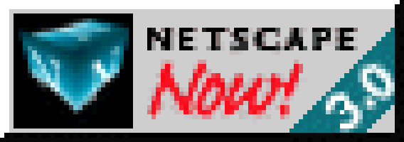

Next to the Sisters, I have collected vinyl from my favourite bands over the last couple of years. This list is still incomplete; I will update it once I am home again.
There are still some items missing in this list. Bear with me. Whenever there was not a download code included, I would digitise the records myself using the very old Telefunken S 500 hifi my father once bought over 40 years ago, connecting it to my Mac using an Auvisio USB Pre-Amp. Recording and conversion done via Audacity.
| Artist | Title | Year | Notes |
| A. A. Williams | A. A. Williams | 2019 | Reissue of her phenomenal debut album |
| A. A. Williams | Forever Blue | 2020 | |
| A. A. Williams | Songs From Isolation | 2021 | |
| Blind Delon | Chimères | 2020 | |
| Chris Catalyst | Life Is Often Brilliant | 2018 | technically this is a CD with a very nice and personal dedication, plus a signed photograph (#10 of 100) from the cover artwork |
| Chris Catalyst | Kaleidoscopes | 2021 | t |
| Chris Catalyst | Waiting In The Sky | 2022 | t |
| Chris Catalyst | Mad In England | 2023 | t |
| Die Ärzte | HELL | 2020 | Came with a booklet and a hardcover slipcase leaving room for ... |
| Die Ärzte | DUNKEL | 2021 | ... the second part of the album, making together a nice collectors item! |
| Die Ärzte | DEMOKRATIE | 2024 | Limited 7" single |
| Die Toten Hosen | Alles aus Liebe: 40 Jahre (4LP) | 2022 | ltd. to 15,000 records (mine: #13,357). Box set containing 4 LP's, an extensive booklet and a signed autograph photo of the band. |
| Die Toten Hosen | Trink aus! Wir müssen gehen + Alles muss raus (4LP) | 2026 | ltd. to 19,820 records (mine: #17,690). Box set containing 4 LP's, an extensive booklet and a signed autograph photo of the band. |
| Gary Marx | Nineteen Ninety Five and Nowhere | 2008 | Originated from a set of backing tracks offered to Andrew Eldritch in 1995 in an effort to "speed up the next release" ... but the answer according to Marx was silence. See here for the story. |
| Holygram | Modern Cults | 2019 | |
| IST IST | Live in Amsterdam | 2023 | Bought after their gig at the Blue Shell in Cologne. |
| Metallica | Metallica | 2016 | 25th anniversary reissue |
| Metallica | 72 Seasons | 2023 | |
| Nirvana | Unplugged In New York | 2016 | 25th anniversary reissue |
| Pet Shop Boys | Nonetheless | 2024 | Cool effect on the vinyl! |
| Rammstein | Zeit | 2022 | |
| The Virginmarys | The Meds | 2022 | Signed 7" single |
| The Virginmarys | The House Beyond The Fires | 2024 | Came with a signed dedication |
